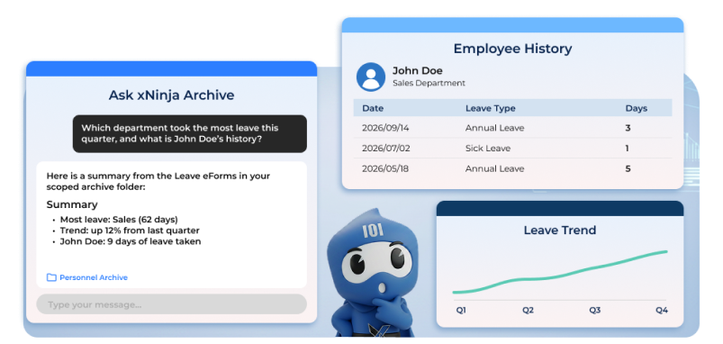
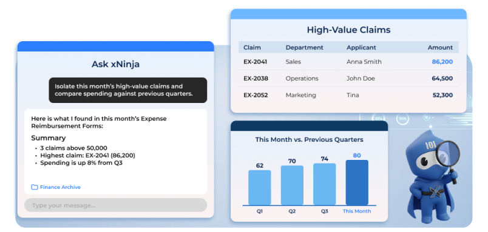

多年來，企業一直受困於紙本表單：雜亂、難以追蹤，而且非常容易遺失。順理成章的下一步是數位化，將實體文件轉換為電子表單。然而，數位化雖然解決了雜亂的問題，許多組織卻忽略了更大的價值：您知道送出的電子表單其實是強大的資料嗎？
團隊填寫的每一張表單都是一筆資料，而 xNinja 能將這些原始資料轉化為可行動的洞察。表單不只是填寫資訊，更代表了您的營運資料。
人資：優化員工支援
您可以建立新的電子表單報表，追蹤各部門趨勢與員工身心狀況。身為人資，您的工作是分析員工的狀況，並找出最能支援他們、同時有利於公司整體的方式。您通常會問這樣的問題：「哪個部門請假最多？」透過電子表單報表，只要設定專屬檢視，就能立即找到答案：
- 將「相關表單」設為「人事」類別下的「請假單」。
- 將「預設範圍」設為「全部」。
- 產生視覺化缺勤趨勢所需的圖表。
- 儲存報表並釘選到首頁，每天快速掌握最新狀況。

現在透過 xNinja Archive，您也可以直接在聊天介面詢問目前的資料，或查詢特定員工的紀錄，深入分析趨勢。

業務：追蹤銷售漏斗與績效
您可以建立自訂的電子表單報表，追蹤訂單並監控銷售績效。對業務團隊而言，重點在於提升轉換率並找出表現最好的產品。這會引出關鍵問題，例如「這一季哪個產品賣得最好？」或「每位業務的報價轉訂單率是多少？」只要這樣設定報表，就能找出答案：
- 將「報表標題」設為「報價報表」。
- 將「預設範圍」設為「本月」。
- 依產品、已送出報價與訂單產生長條圖
- 儲存報表並釘選到首頁，每天快速掌握最新狀況。

現在透過 xNinja Archive，您可以直接在聊天介面交叉比對特定客戶資料，或依歷史訂單表單預測下個月的目標。

財務：掌握各部門支出
您可以設定電子表單報表，密切掌握公司支出與預算分配。對財務部門而言，維持健全的獲利代表要分析現金流，並提出這樣的問題：「這個月哪個部門的報銷金額最高？」只要建立自訂儀表板，就能輕鬆追蹤：
- 將「相關表單」設為「財務」類別下的「費用報銷單」。
- 將「預設範圍」設為「本月」。
- 依部門、專案或個人產生支出的圓餅圖或長條圖。
- 將報表儲存到首頁，在預算超支之前及早發現。

現在透過 xNinja，您可以直接與系統對話深入分析，找出特定的高額申請，或立即比較本月與前幾季的支出。
